Requisitos previos
Navegador web:
Asegúrate de tener un navegador moderno
(Chrome, firefox, safari, etc.)
para una mejor experiencia.
Conexiòn a internet:
Necesitas acceso a internet para interactuar con el sistema.
Pasos guia para el uso e inicio de sesion en Grok con ejemplos para estudiantes
Abre el navegador de tu preferencia y escribe en la barra
de diecciones (en este caso de utilizaremos google) y copia y pega
la siguiente url: https://grok.com/

Luego de poner el url presiona la tecla Enter y aparecera la siguiente pantalla
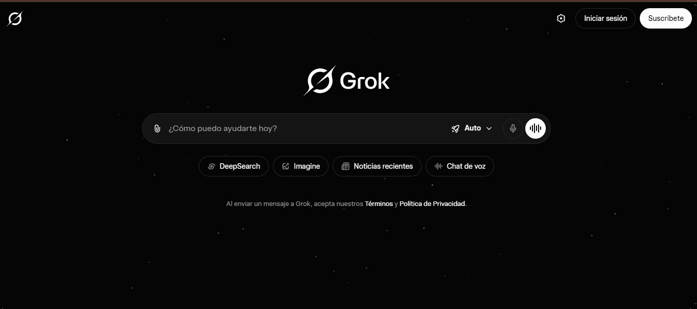
Empieza tus investigaciones, resolver tus dudas o descubrir nuevas cosas.
utilizaremos un ejemplo basico acerca de como realizar una tesis
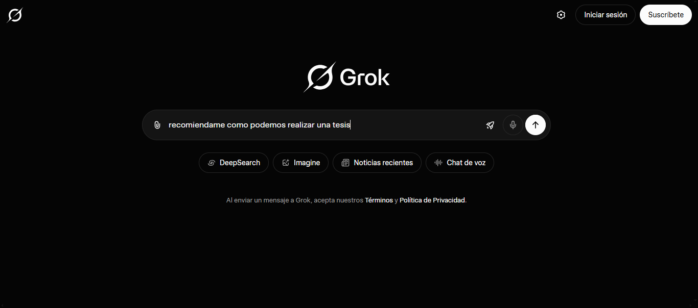
A diferencia de gemini, este funcion mas como la barra de busqueda de google
Grok te muestra què es lo que mas se busca conforme tu vayas escribiendo.
Al tener nuestra pregunta ya realizada presionamos Enter
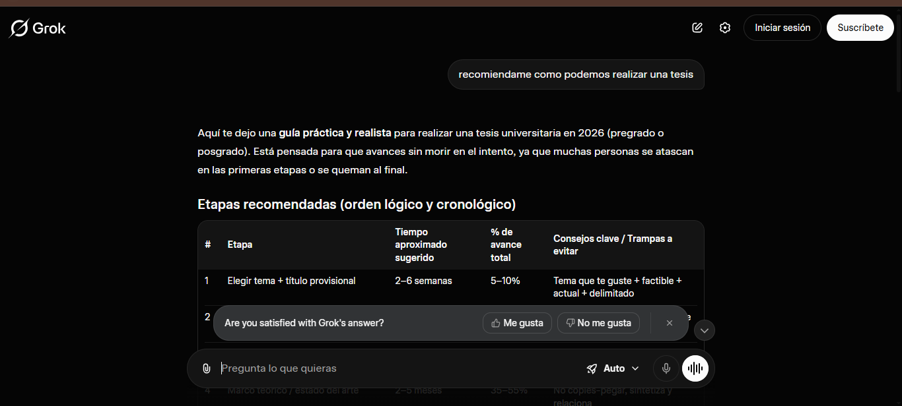
lo que nos saldra ya serà la mejor recomendacion de la IA.
tambien podemos realizar preguntas o investigaciones por microfono
Dar acceso al mcrofono
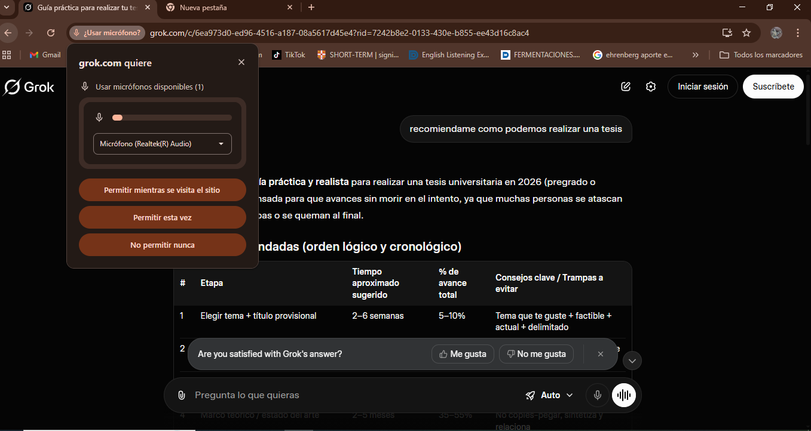
Al darle click a la imagen del microfono, automaticamente debemos de darle acceso
a nuestro microfono,
le damos a "permitir esta vez" o "permitir mientras se visita el sitio",
le recomendamos poner "mientras se visita el sitio" sino,
se vera obligado a que cada vez que usted quiera preguntarle
algo a Grok cuando vuelva a iniciar
debe darle el permiso y es estedioso hacer eso.
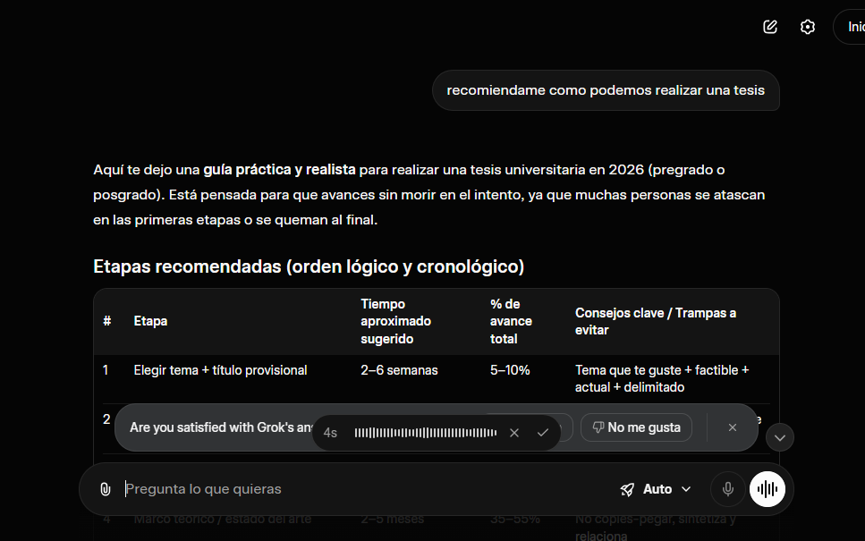
como podemos admirar, cuando damos los permisos muestra que nos esta escuchando
y a diferencia de gemini nosotros podemos parar hasta que queramos la grabacion,
cliqueando al check.
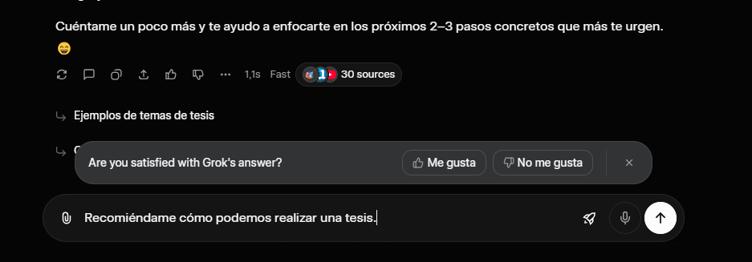
Al darle aceptar, como podemos ver esta exactamente lo que queriamos buscar.
Para grok, no es necesario en lo absoluto iniciar sesion para acceder
a que nos genere una imagen o realizar bocetos CUANDO apenas
empezamos, pero luego saldrà este mensaje
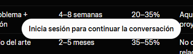
Para lo cual tambien nos pide acceso si queremos abrir achivos de drive o onedrive
Asi que iniciaremos sesion.
Iniciar sesion
Grok tiene muchas herramientas muy profesionales que se necesitan para tareas pero ¿Còmo podemos utilizarlas si aun no hemos iniciado sesion?
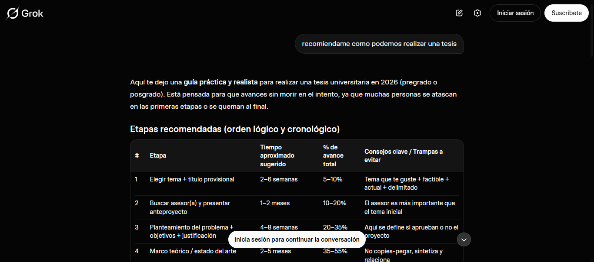
En nuestra pantalla actual tenemos la opcion "Iniciar sesion", le damos click
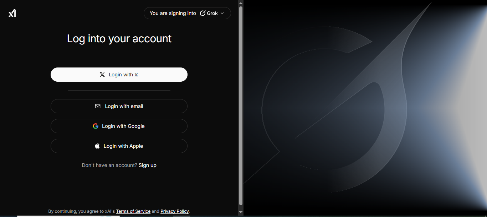
Vemos diferentes opciones para iniciar sesion en Grok
en esta oprtunidad utilizaremos "continuar con google"

Elegimos la cuenta y nos saldra este mensaje
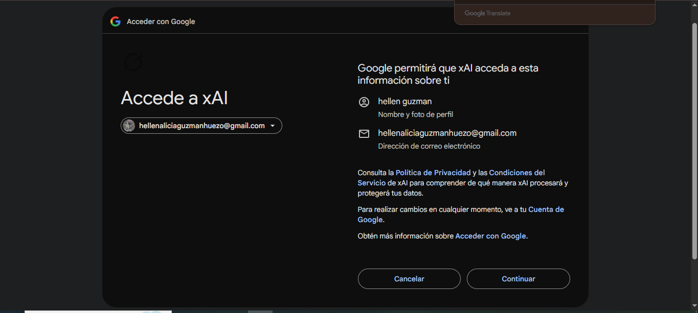
Nos mostrarà la informacion que Grok tomarà de nosotros. Le damos a continuar.
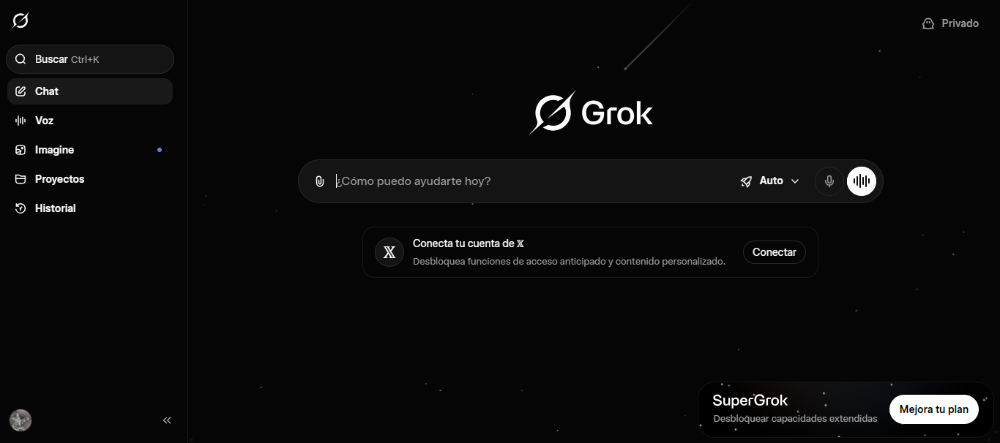
Eso serìa todo, ya que no nos pide contraseña.
Grok tiene demasiadas opciones con las cuales trabajar, pero por ahora
realizaremos juntos un ejemplo de generar imagenes utilizando grok
ya habiendo iniciado sesion.
Utilizar herramientas de Grok
class="card-text"Si accedemos a "Imagine" tenemos multiples opciones de imagenes.
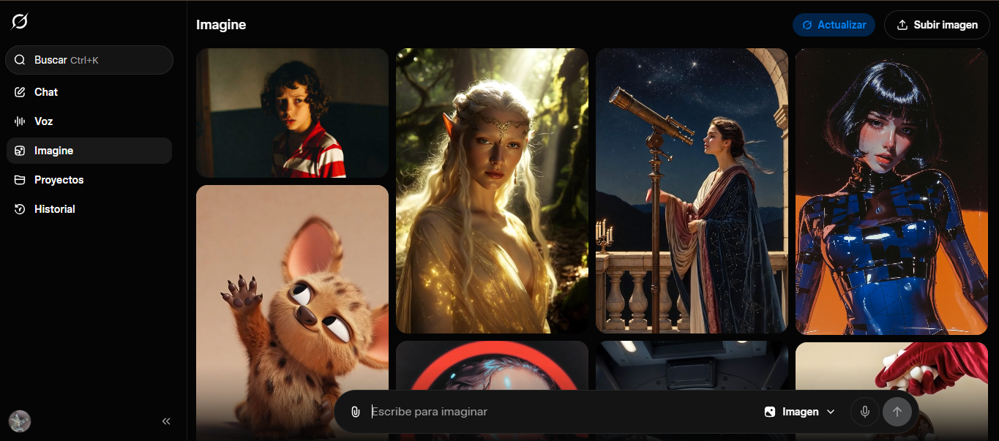
nos enfocaremos totalmente en realizar una imagen ejemplo sobre:
un estudiante leyendo un libro de texto de literatura
Primero para escribir el texto, debajo tenemos una barra donde podemos decirle què crear
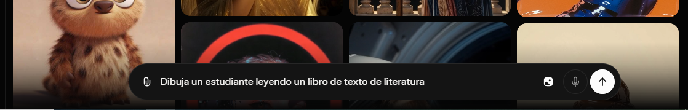
Cliqueamos Enter.
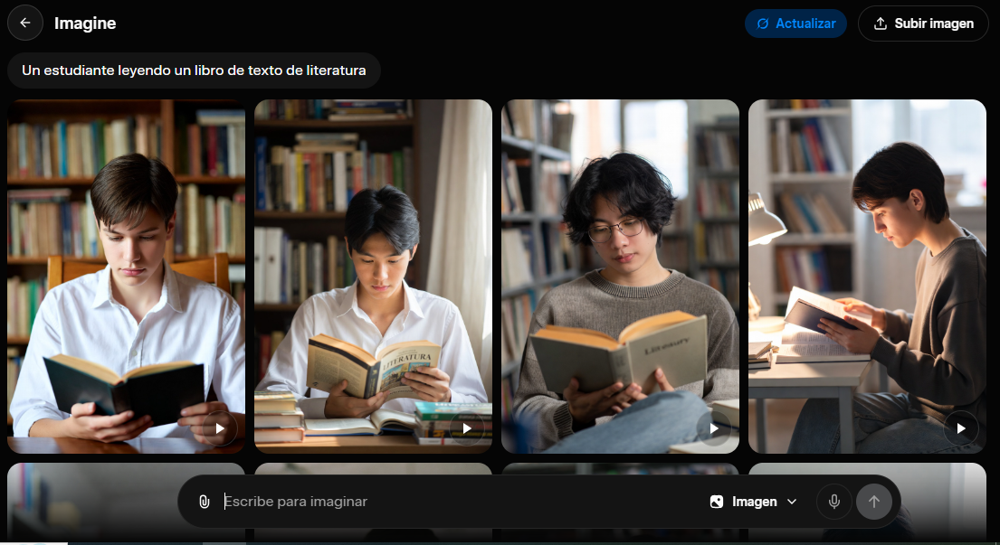
y ya estarìa hecho. Ahora puedes pedir que te genere imagenes de lo que sea
siempre enfocandote en que sea educativo y de gran ayuda para trabajos
donde te piden imagenes que no son faciles de encontrar por tu navegador.
IMPORTANTE
Al no tener la opcion premium, siempre tendremos un limite en los chats e imagenes
por lo cual podemos acceder a mejor contenido o utilizar màs tiempo la IA
accediendo a la opcion plus al hacerle click a la opcion inferior de la pantalla "supergrok"
que esta en el inicio
o en la opcion "chat". Esto contiene muchos beneficios, pero es opcional.
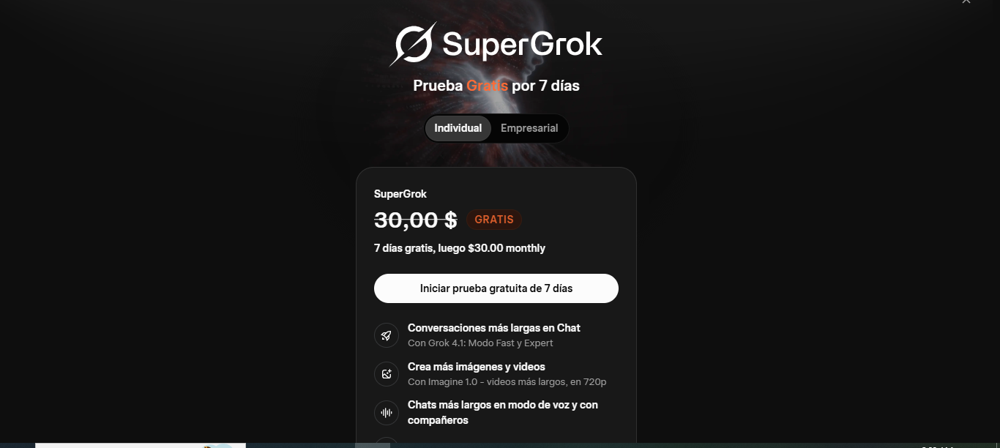
Obtener supergrok gratis